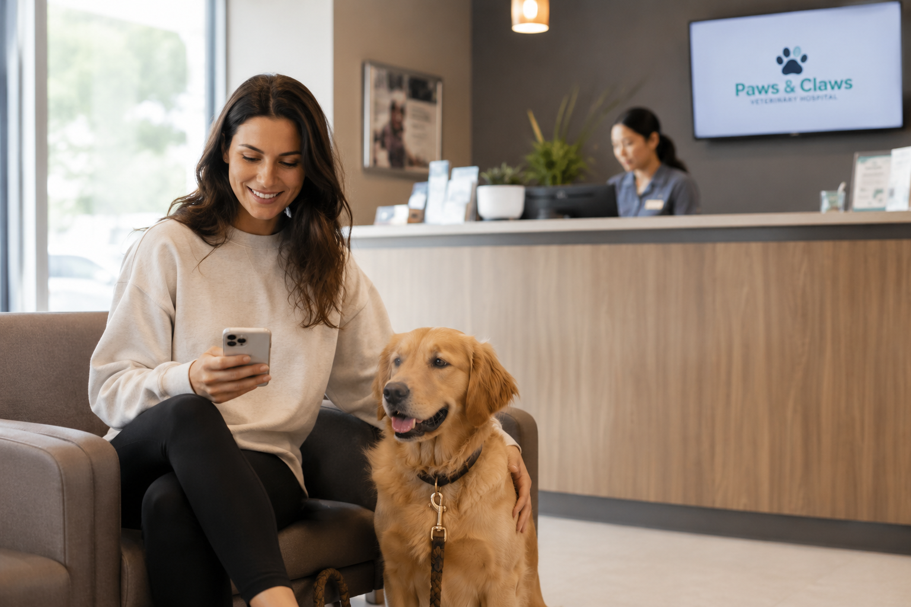

If you've ever clicked on a "pet insurance" link expecting an article and instead landed on a form asking for your email before you've learned anything — yeah, we're not doing that here. This is just the breakdown: what it covers, what it doesn't, and why the timing of when you sign up matters more than almost anyone tells you.
Here's the honest starting point: pet insurance isn't complicated, but it IS full of small print details that genuinely change how useful a policy is — and most of those details come down to one thing. When you sign up, relative to your dog's age and health history.
That's really the whole game. Get the timing right, and a policy quietly sits in the background covering things you hope you'll never need it for. Get the timing wrong — wait until after something's already happened — and you might find out the hard way that the thing you needed covered is now classified as a "pre-existing condition," which is insurance-speak for "this existed before you signed up, so it's on you."
Let's go through it properly.
Most dog insurance plans fall into a few buckets. Here's the plain-language version of each.
The "ate something they shouldn't have, swallowed a sock, got into the trash and cut themselves, fell down the stairs" category. Accident coverage usually has the shortest waiting period — sometimes even none at all — because there's no ambiguity about whether it happened before or after you signed up. An accident is an accident.
Infections, digestive issues, allergies, more serious diagnoses down the line. This is where the waiting period matters most — illnesses develop gradually, sometimes silently, so insurers build in a window (often around two weeks) before illness coverage kicks in. Anything that shows symptoms during that window can end up excluded as pre-existing.
A puppy's immune system is still developing, and their curiosity means they're constantly encountering new bacteria, foods, and objects. The "young and healthy = low risk" assumption is actually backwards in the first year or two — puppies are statistically MORE likely to need an unplanned vet visit than a calm adult dog.
Hip dysplasia, certain heart conditions, breed-specific issues — the things that are sometimes baked into a dog's genetics and may not show up for years. This is the category where enrollment age makes the single biggest difference, because once any sign or symptom appears, even informally, it can be classified as pre-existing for the life of the policy.
A "pre-existing condition" doesn't require an official diagnosis to count. If your dog was limping before you enrolled — even if nobody called it "hip dysplasia" at the time — and it's later diagnosed as hip dysplasia, that condition is typically excluded. Insurers compare claim dates against your vet's records, not just diagnosis dates.
Most accident & illness plans look similar at a glance but diverge significantly in the details. A few things Fetch includes as standard that commonly cost extra elsewhere — or simply aren't available:
The core plan covers unexpected accidents and illnesses. Fetch also offers an optional Wellness add-on (starting around $15/month) for routine and preventive care — annual exams, vaccinations, dental cleanings, spaying/neutering, flea and tick prevention, and more. No deductible, no copay, and no waiting period on the wellness side.
Here's roughly how the picture changes depending on when you enroll. None of these ages are hard cutoffs — but the trend is consistent across pretty much every provider.

The single most useful thing you can do, insurance-wise, is treat it as a "week one" task rather than a "someday" task. Not because anything is necessarily wrong with your puppy — but because the absence of anything wrong yet is exactly what makes week-one enrollment so valuable. There's nothing yet for an insurer to exclude.
A quick first vet visit shortly after enrollment also helps — it creates a documented "clean baseline" that works in your favor if you ever need to make a claim later, since it helps prove a condition wasn't present at the time you signed up.
Below is one provider we've looked at closely and feel good pointing people toward. We keep this list short and honest — we only feature providers we've actually been able to verify. No padding just to look comprehensive.
Disclosure: The link to Fetch Pet Insurance on this page is an affiliate link. If you sign up through it, we may receive a commission at no additional cost to you. This does not affect the information presented above, which is intended as general educational content and is not financial, veterinary, or insurance advice. Always review Fetch's full policy terms, exclusions, and waiting periods directly before enrolling.